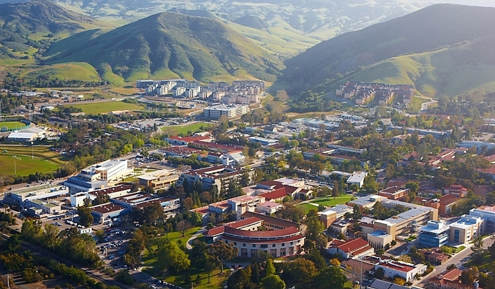

New Academic Year!

Entering into this new academic year at Cal Poly is exciting because of all the new things I am getting to experience and oportunities I get here. The campus is bigger than where I went to high school by a lot. There is always people walking around campus and it never feels empty. Classes are different because They are not consecutive and I get gaps inbetween classes which is also different. I also get a different schedule depending on the day it is which is also nice. I can't wait to see all the new experiences I will have and make new memories here at Cal Poly.